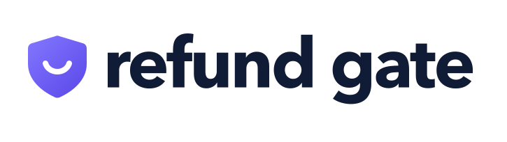
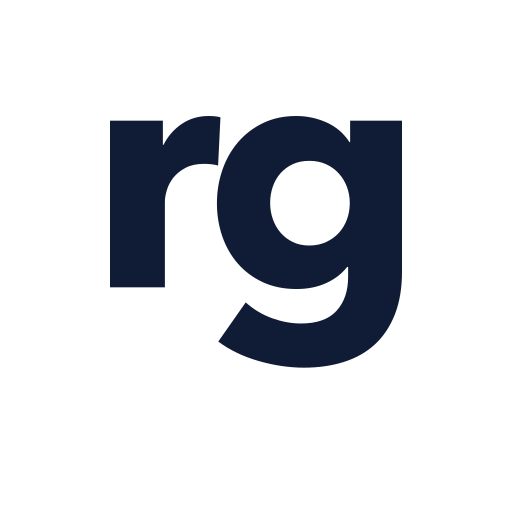
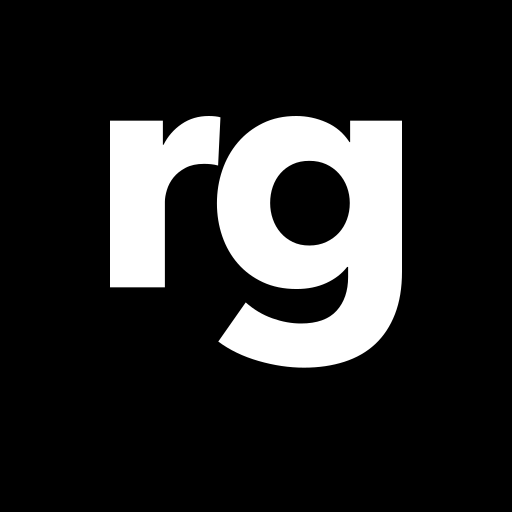

REFUND GATE · IDENTITY FILES
Trust, with a smile.
Bold lowercase lettering, a softly rounded shield, and a small smile. Final spacing is tightened by 0.35 units per letter interval at a 100-unit type size.

Logo variations
01 Full logo
02 Wordmark
03 Stacked logo
04 Square text
05 Shield icon
06 Initials


Color guide
The shield moves diagonally from light violet at the upper left to deep violet at the lower right. Keep text solid navy on light backgrounds and white on dark backgrounds. Use the monochrome files when a single ink is required.
Spacing schematic
Keep the original proportions. The exported canvases include breathing room; preserve it in standard placements. The square formats use a 512 × 512 vector canvas and 1024 × 1024 PNG/JPEG exports.
Use the right layout
| Layout | Use |
|---|
| Horizontal | Website headers, slide footers, email signatures |
| Wordmark | Text-led placements with limited height |
| Square stacked / square text | Video title cards, thumbnails, square brand placements |
| Shield icon | Slack app avatar and small app surfaces |
| rg initials | Alternate text avatar where an abbreviated name is useful |
Files and handoff
Every layout includes white-background, black-background, transparent-for-light, transparent-for-dark, monochrome-black, and monochrome-white SVG and PNG files. JPEGs are supplied for white and black backgrounds, since JPEG cannot preserve transparency.
SVGs contain editable vector outlines; no font installation is needed. Open an SVG in Adobe Illustrator and use Save As → Adobe Illustrator (.ai) for a native Illustrator document. Native .ai files are not included in this package.
Typography: Avenir Next Bold, with custom tightened spacing. The letters in the exported logos are outlines. For future product layouts, use short headlines, generous white space, and violet accents sparingly.